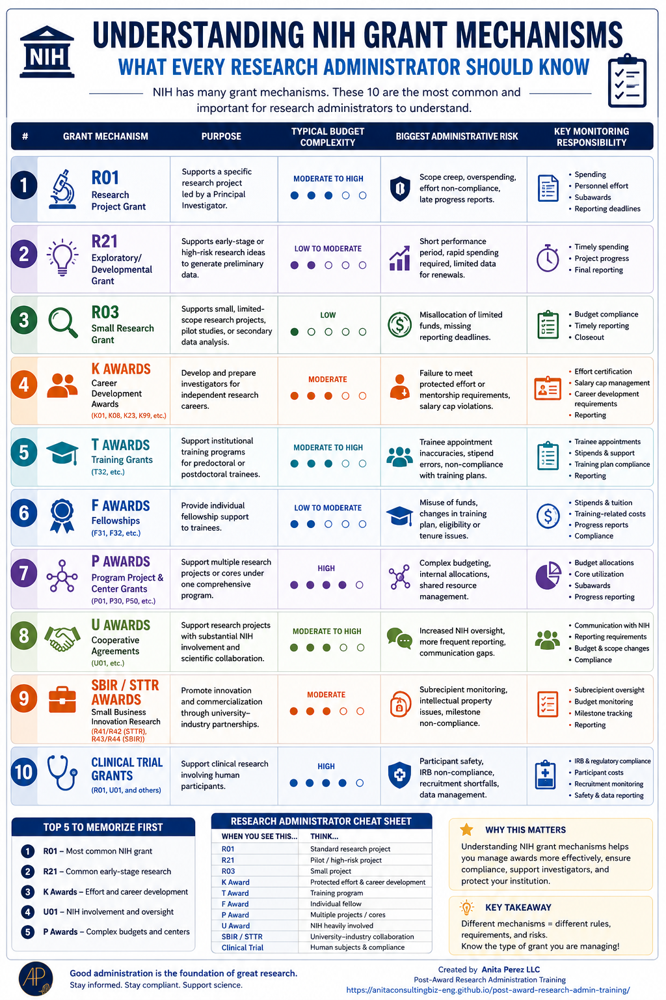
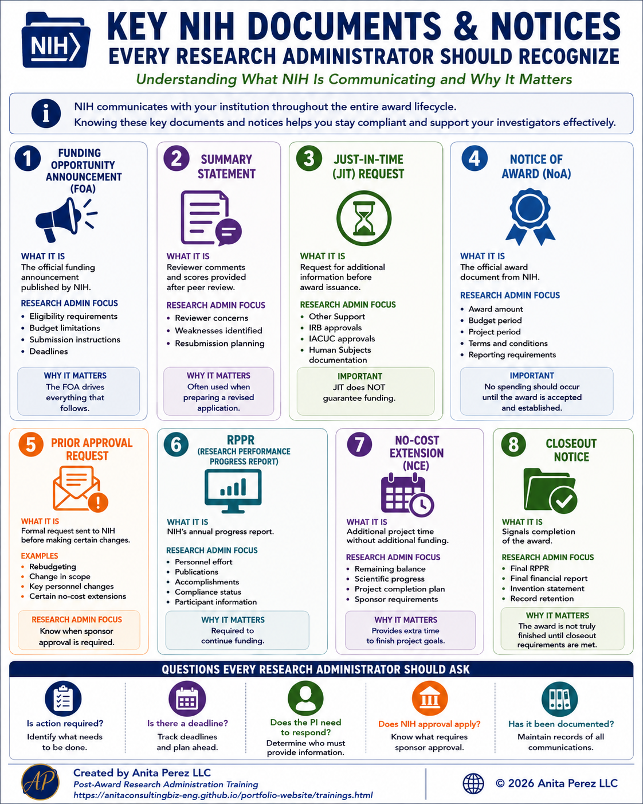
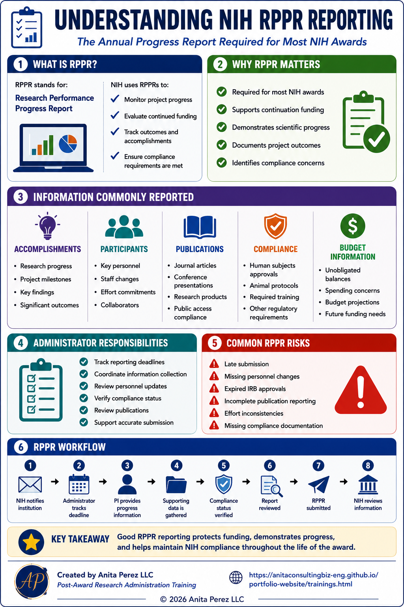
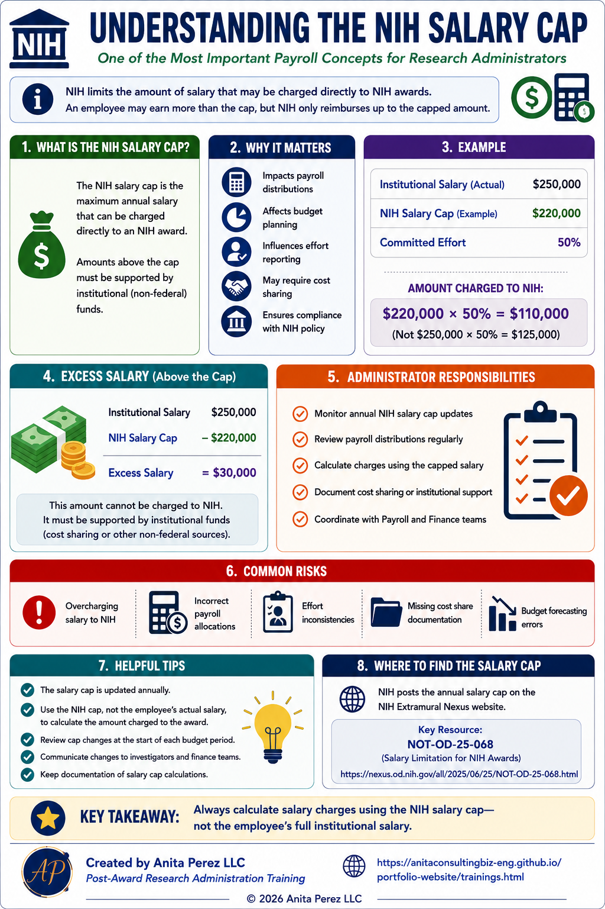
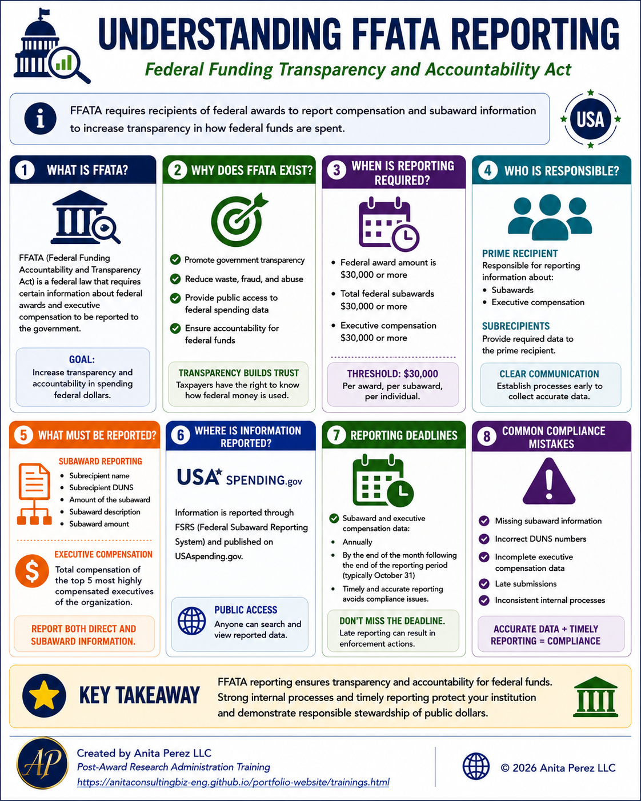

Research Administration Lifecycle
Follow the lifecycle from proposal development through closeout.
Resource Library
Research administration involves much more than reviewing transactions and submitting reports. Successful administrators must understand regulations, financial management, compliance requirements, institutional processes, sponsor expectations, and the type of award they are managing.
This resource library provides quick-reference guides, workflows, formulas, and practical tools to support day-to-day post-award management. Each resource can be previewed, downloaded, or printed from your browser.
Foundations
Before managing budgets, monitoring effort, or preparing reports, it is important to understand the broader environment in which research administration operates. Research administrators work with investigators, sponsored programs offices, finance teams, compliance offices, payroll staff, departments, and sponsors.
These resources provide a high-level overview of the profession, common responsibilities, key relationships, and best practices that support successful award management.
Follow the lifecycle from proposal development through closeout.

Explore roles, responsibilities, communication paths, and collaboration points.

Understand who research administrators work with across the institution.

Understand what research administration looks like day to day.

Practical habits that support strong research administration.

Protect your project and institution through sound administrative practices.

Find the people, systems, policies, learning tools, and support resources that help you succeed.
Compliance & Stewardship
Compliance is one of the most important responsibilities in research administration. Federal regulations, sponsor requirements, institutional policies, and award terms all influence how sponsored funds must be managed.
These resources focus on documentation, effort reporting, risk management, and responsible stewardship of sponsored funds.

Uniform Guidance overview for responsible federal award management.

Review key compliance areas across proposals, spending, payroll, reporting, and records.

Connect payroll, salary allocation, effort certification, and compliance review.

Identify, assess, act, and escalate risk when needed.
Financial Management
Research administrators play a critical role in monitoring award finances throughout the life of a project. This includes reviewing expenditures, managing payroll allocations, forecasting future spending, monitoring burn rates, and identifying financial risks before they become larger problems.
These resources introduce common financial concepts, calculations, forecasting techniques, and monitoring tools used in post-award administration.

Burn rate, runway, salary allocation, variance, remaining balance, and more.

Fringe, F&A, cost share, encumbrances, utilization rate, and closeout timing.

Use spending trends to identify overspending, underspending, and project risk.

Review common forecasting methods and when to use them in research administration.

See the full operational flow from award setup to closeout.
NIH Fundamentals
The National Institutes of Health (NIH) is one of the largest sponsors of research in the United States. Research administrators who support NIH-funded projects need to understand the different types of awards NIH uses to fund research, training, career development, centers, cooperative agreements, and clinical trials.
NIH awards also come with specific documents, reporting requirements, salary limitations, and administrative expectations. Understanding these basics helps research administrators support investigators, meet deadlines, manage payroll correctly, and maintain compliance throughout the life of an award.

Learn the top NIH grant types every research administrator should recognize and support.

Recognize common NIH documents such as FOAs, JIT requests, NoAs, RPPRs, no-cost extensions, and closeout notices.

Learn what RPPR reporting is and what administrators review during NIH annual progress reporting.

Learn how NIH salary limitations affect payroll distributions, budgeting, effort reporting, and compliance.

Understand federal transparency reporting, subaward reporting basics, deadlines, and common compliance risks.
{kind=link}
{kind=link}
{kind=link}
{kind=link}
{kind=link}